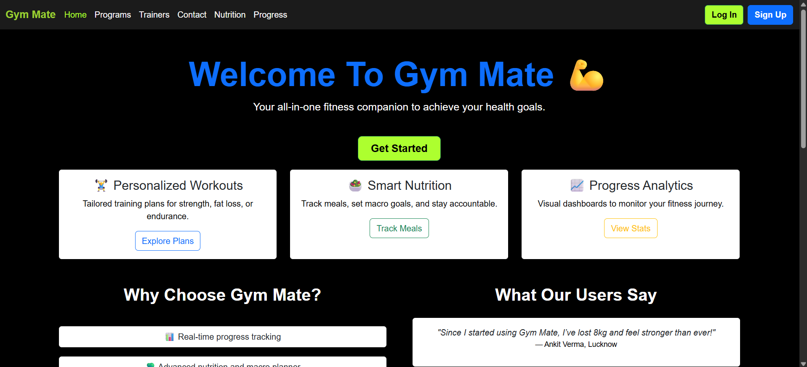

SUDHANSHU GUPTA
Welcome to My Portfolio


Hi, I'm Sudhanshu Gupta
Web Developer, Blockchain Enthusiast
& Budding Software Engineer.
About Me
Hello! I’m a student from Lucknow, Uttar Pradesh, currently pursuing an engineering degree in Computer Science with a focus on IoT and Blockchain at BBD University, Lucknow. My early education was at Kendriya Vidyalaya, S.G.P.G.I.M.S, Lucknow, where I was passionate about sports like cricket, football, and kabaddi, and even won a silver medal in the regional sports meet for kabaddi. I achieved 89.2% in my X board exams and 91.6% in XII.
During my college years, I have maintained a strong academic record, average CGPA of all semesters till now is 8.5. I have also earned distinctions in subjects like Data Structures, IoT Systems, and Blockchain Technologies, reflecting my dedication and passion for my chosen field of study.
I’m always eager to learn and dive into new technologies. I love meeting new people and working in teams. During my time at college, I volunteered with the cultural tech team for our annual fest and was a part of the college society AAINA.
Coming from a middle-class joint family, I understand that growth takes time and effort—good things are worth the wait.
- Programming Languages: Python, Java, C
- Web Technologies: HTML, CSS, JavaScript
- Data Analysis: NumPy, Pandas, Matplotlib
- Database: MySQL, Supabase
- Tools & Platforms: Docker, Kubernetes, GitHub, Postman
My Work
GymMate – Fitness & Workout Website

Tech Stack: HTML, CSS, JavaScript
Description: GymMate is a modern fitness-focused website designed to help users explore workout routines, fitness goals, and healthy lifestyle guidance. The project emphasizes clean UI, smooth navigation, and responsiveness across devices.
Additional Details: Built with a user-centric approach, GymMate features structured workout sections, visually appealing layouts, and optimized performance. The project reflects my ability to design real-world web interfaces and deploy them successfully using Netlify.
BBD College Papers
Tech Stack: React + Vite, HTML, CSS, Supabase, GitHub
Description: A platform for managing and accessing previous year college papers at @bbdcollegepapers.in. Collaborated as part of a team and handled the database lifecycle, including design, fetching, and implementing security policies.
Additional Details: The project showcases scalability and secure data management, with policies designed to prevent unauthorized access while ensuring seamless data retrieval for users.
Hack2Skill Project: Voice-Enabled Web Map Interface
Tech Stack: JavaScript, Leaflet GIS, SpeechKITT, Python, Flask
Description: Developed as part of a hackathon organized by ISRO and Hack2Skill, this innovative project features a voice-enabled web map interface. The solution integrates SpeechKITT for voice commands, enabling dynamic interaction with geospatial data. Users can search for locations, toggle map layers, and perform other navigation tasks seamlessly.
Additional Details: The project uses WMS layers for enhanced visualizations, including glaciers and water bodies, and incorporates Google Maps for satellite views. Aimed at improving accessibility, it integrates UserWay's Accessibility Menu to adjust contrast, alignment, and other features for user customization.
Achievements
- Winner of TechXplore 2024 for developing a Smart Irrigation System based on IoT with features like automatic lid control and soil-moisture-based irrigation.
- 1st Runner-Up in Software Exhibition 2024 for the project BKL Hub, integrating the BBD College Papers website.
- Certified in Docker Essentials, Cloud Core, and Blockchain Essentials by IBM.
Extracurricular Activities
- Participated in Hackathon 2025 at Ram Manohar Lohia Institute of Medical Sciences, Participated as part of a dynamic team to develop an Automated Emergency Code Management System, addressing critical healthcare needs. This hackathon was notable for being hosted by a reputed government medical college.
- Member of the cultural tech team for annual college fest AAINA. Contributed to designing and implementing backdrops for diverse performances, witnessed by an audience of 500+ students, faculty members, and distinguished guests, including Hon’ble P.T.Usha.
- In school, I am an active participant in regional kabaddi tournaments, winning a silver medal.